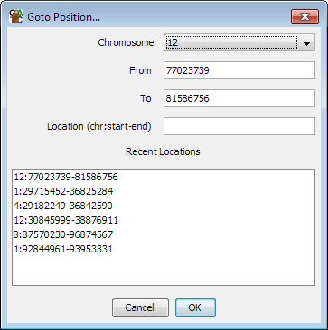
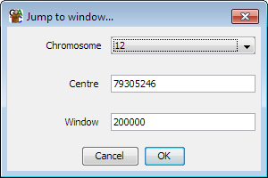
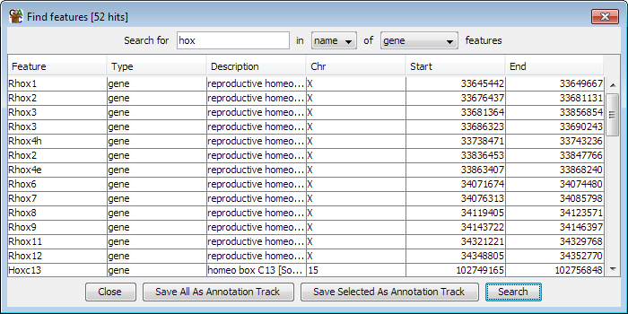

Rather than manually moving around the genome there are a couple of different search tools you can use to quickly take you to a region of interest.
If you know the genomic coordinates of the region you want to go to you can select Edit > Goto position and manually enter the position you want to see. The chromosome view will immediately update to show this region. You can either enter chromosome, start and end separately or if you have a location string from another source (eg chr1:500-1000) then you can paste this into the location box - this understands locations both with and without the intial chr on the chromosome name.

The box also keeps a record of the last few locations you've been to do you can also use this to jump back to somewhere you've been recently.

If you want to find a particular annotation feature then you can use the Find Feature tool. To launch this you select Edit > Find Feature.
The find feature tool searches for a single word or phrase in the annotation for all of the features in the current genome. You can limit your search to just the feature names, or you can search through the whole set of annotation. You can also limit your search to a particular type of feature.

Once you have a list of results you can sort these by clicking on any of the column headers in the results table.
If you want to see a feature in the chromosome view you can double click on any line of the feature results and the view will immediately jump to show the region covered by that feature.
From within the results window of the feature search dialog you can easily turn the results of your search into a new annotation track. You can add all search results as a new track by pressing "Save all as annotation track" or you can select just a subset and then press "Save selected as annotation track"